Proyecto de Ideo Maker
Sala maker para la Escuela Estación Baquedano, en la comuna de Sierra Gorda, inaugurada el 23 de mayo de 2024.
Este es un proyecto de Ideo Maker, hecho por su equipo. Aquí muestro la parte en que participé.
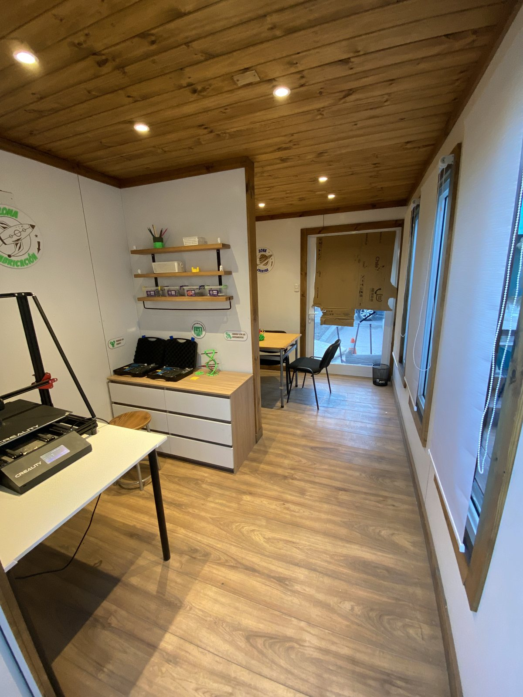
Sala Maker STEAM para la Escuela Estación Baquedano, en la comuna de Sierra Gorda, región de Antofagasta, desarrollada por Ideo Maker para la Fundación País Digital. Es parte de MASXXI, el programa de transformación educativa de Fundación País Digital, financiado por Spence, de BHP. Se inauguró el 23 de mayo de 2024, el mismo día que la sala de la Escuela Caracoles.
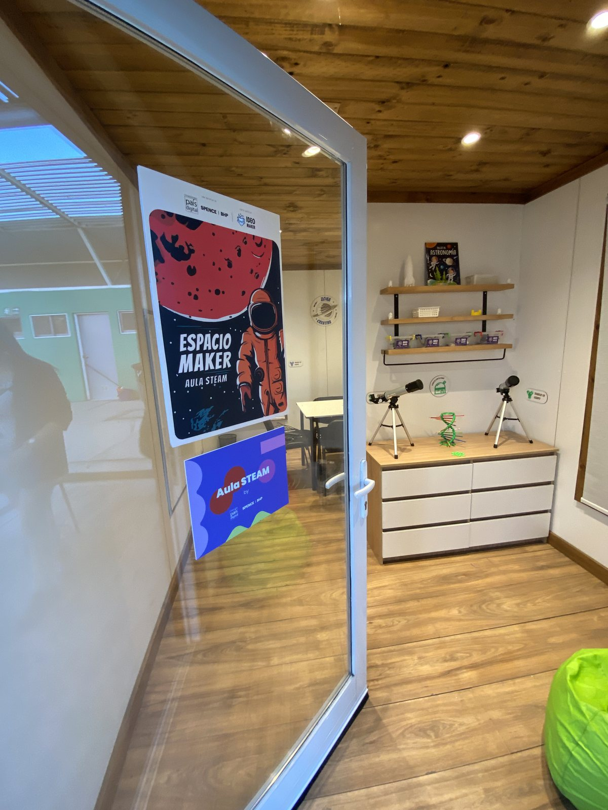
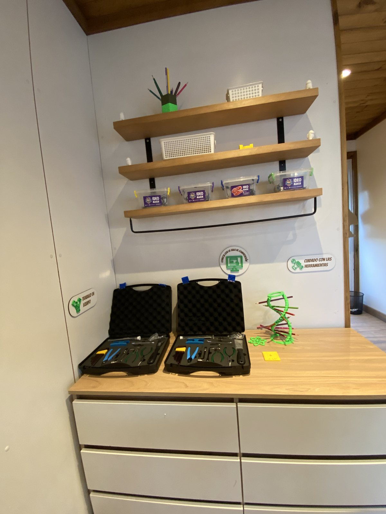
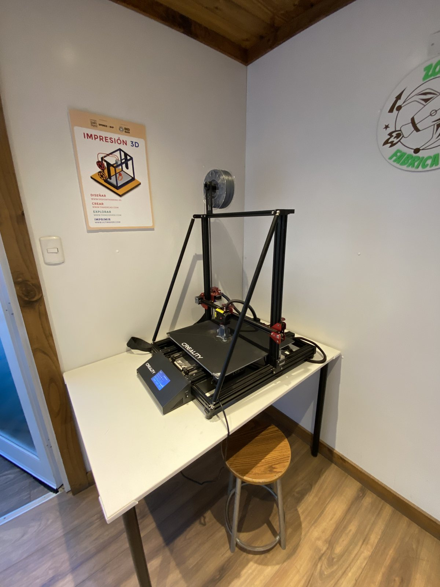
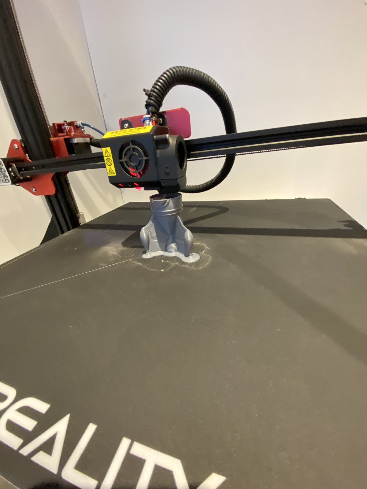
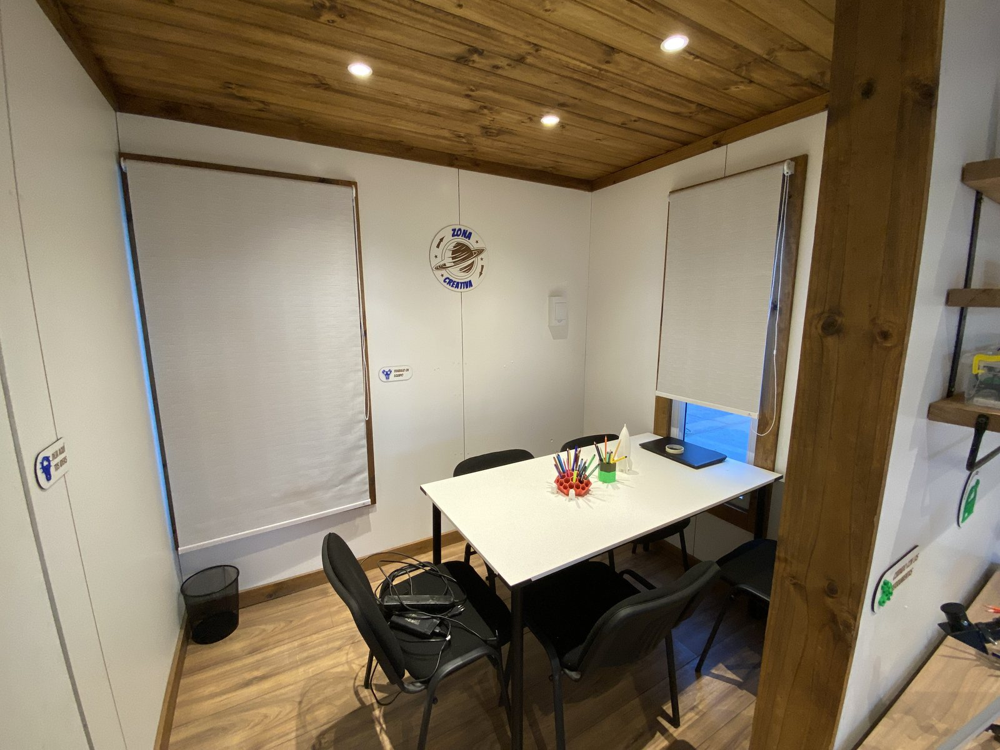
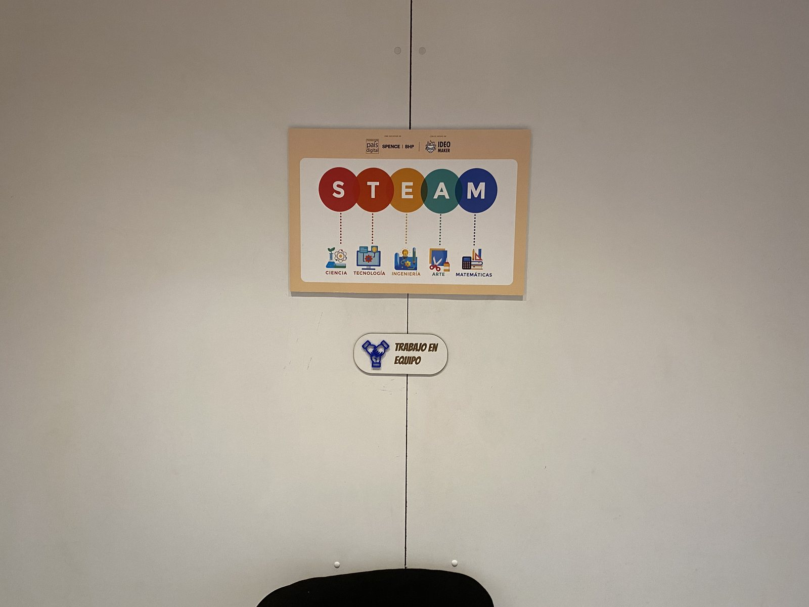
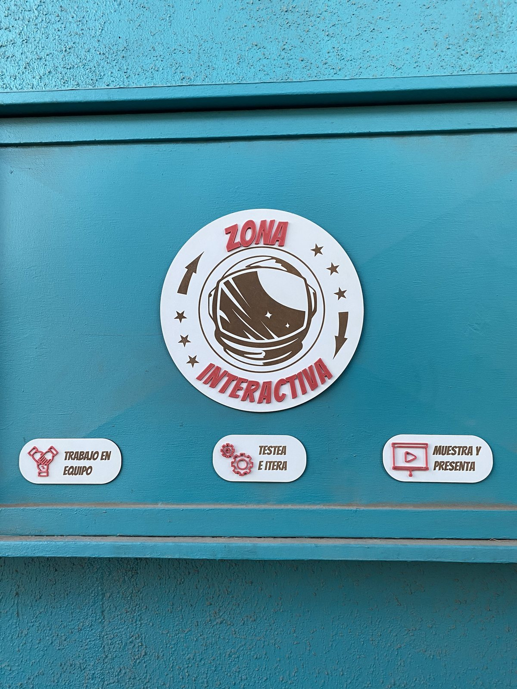
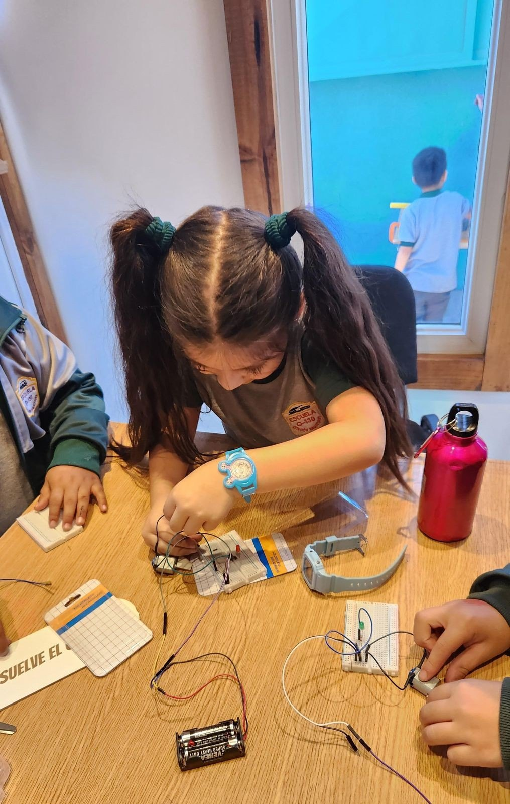
En abril de 2024, al comenzar el segundo ciclo de MASXXI en Sierra Gorda, capacitamos a los docentes de la escuela para usar la sala y sus tecnologías.
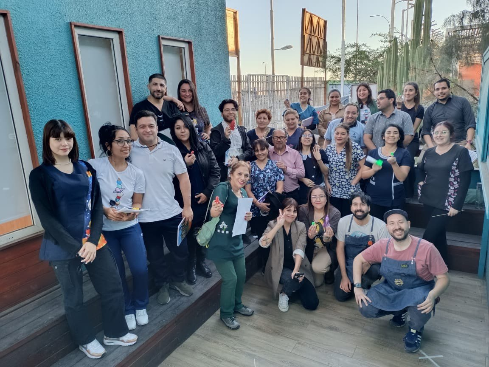
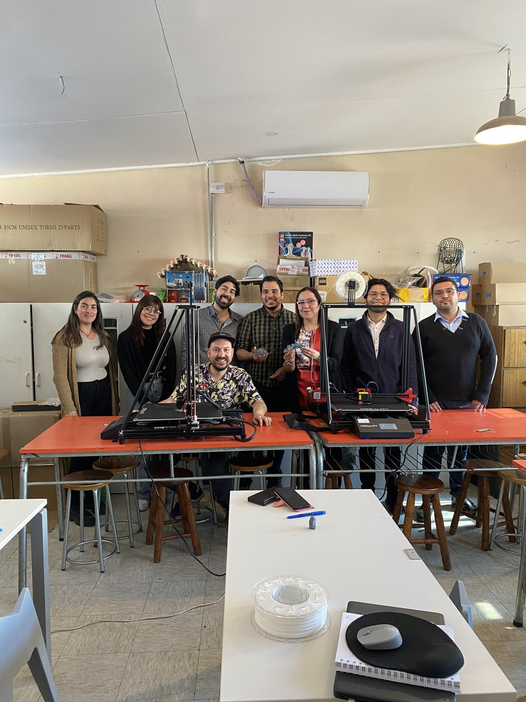
Las salas de las dos escuelas se inauguraron juntas el 23 de mayo de 2024, con autoridades locales, representantes de Spence y la comunidad escolar. Esa jornada Ideo Maker montó una feria maker para estudiantes. Las fotos son de la jornada conjunta con la Escuela Caracoles.
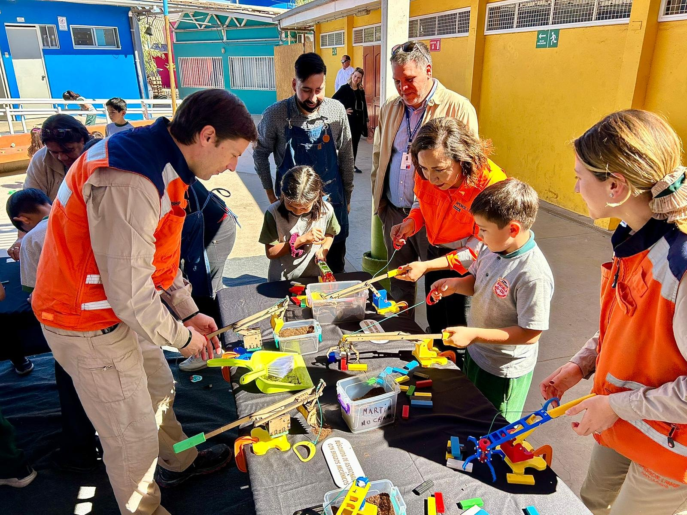
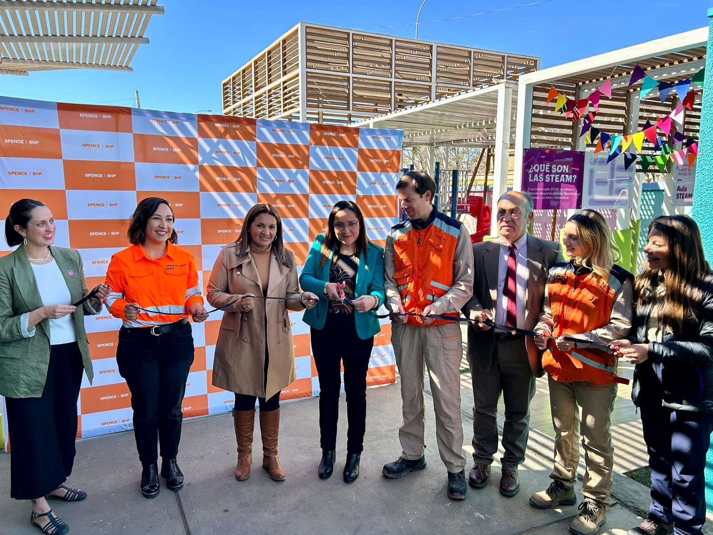
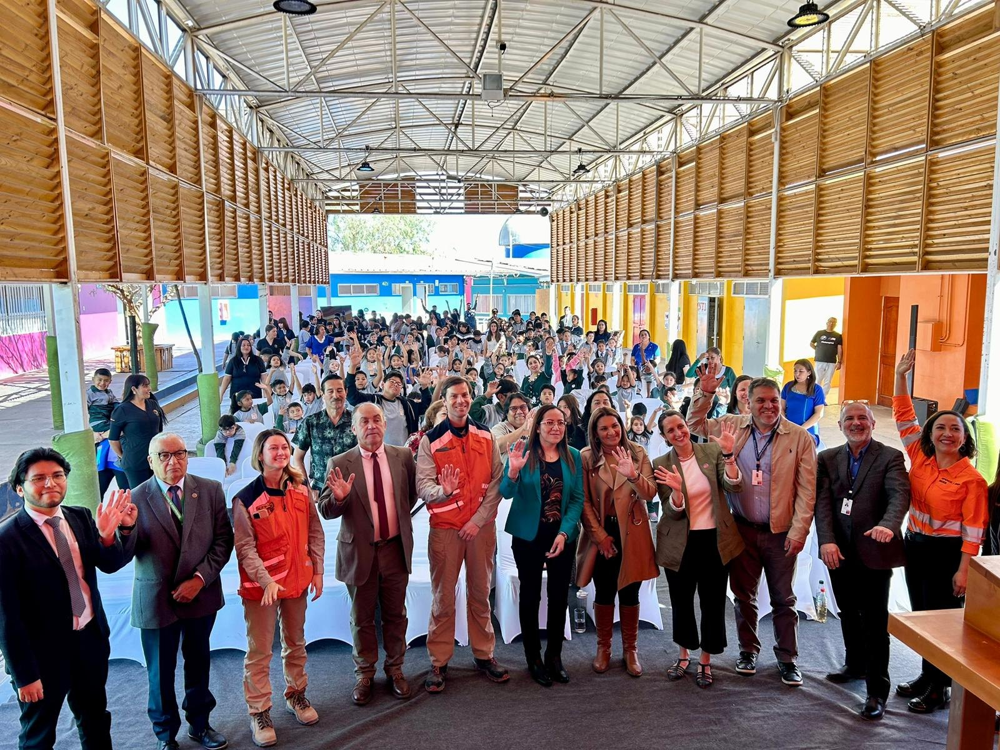